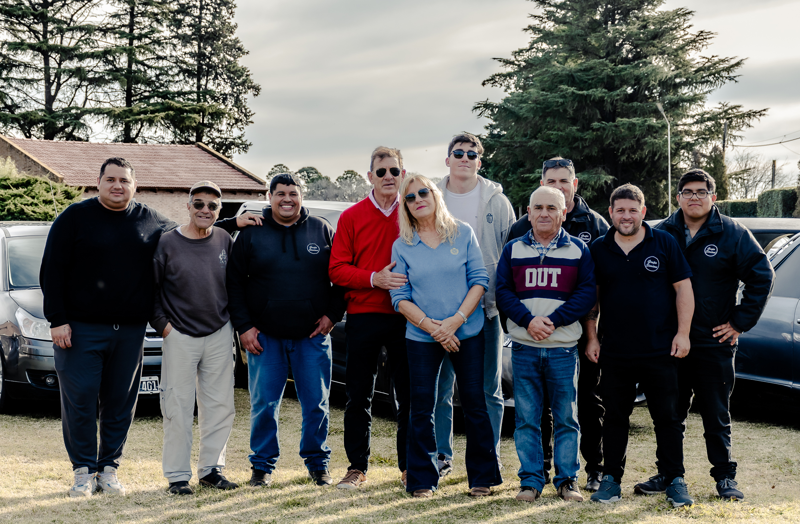

Nuestra Historia
Grupo Simioni tiene sus orígenes en los municipios de San José de la Esquina, provincia de Santa Fe y Cruz Alta, provincia de Córdoba en el rubro pompas fúnebres a principios del Siglo XX. La familia Simioni, a través de quien en vida fuera DOMINGO SIMIONI y su hermana GLARY estuvo ligada a la actividad desde sus inicios cuando los carruajes con caballos eran el patrimonio principal de la actividad. Con el transcurso del tiempo fueron surgiendo modificaciones en la prestación de servicios fúnebres y la empresa siempre procuró acompañar estos cambios innovando permanentemente y las nuevas generaciones se fueron adaptando a estas nuevas tendencias. Por esta razón actualmente estamos construyendo nuestro propio crematorio. Al mismo tiempo se fue expandiendo el radio de acción a otros municipios de la región. Acompañando nuevas tendencias en 1992 surge la división servicios sociales que permite con el pago de una mínima cuota asegurar importantes beneficios a las familias como traslados en ambulancia, enfermería, ortopedia, audiología, descuentos en medicamentos y otros.
En nuestro afán de estar siempre acorde a nuevas tendencias y profesionalizar nuestras prestaciones, priorizamos la formación y capacitación permanente en congresos regionales, nacionales e internacionales En el carácter de empresas prestadoras de servicios fúnebres formamos parte de:
Ambas como entidades reguladoras y garantes de la actividad.
Hoy el grupo presta servicios fúnebres, sociales y ortopedia en:
